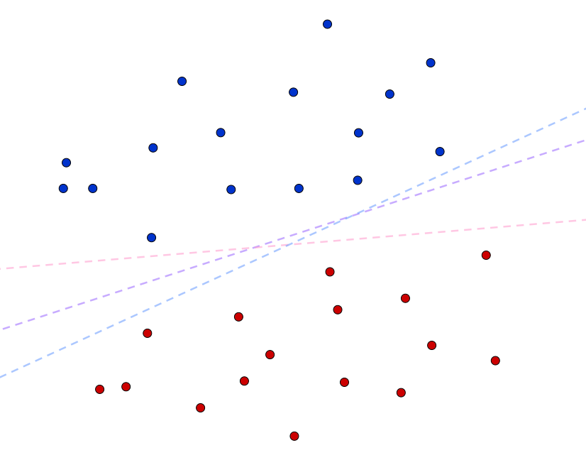
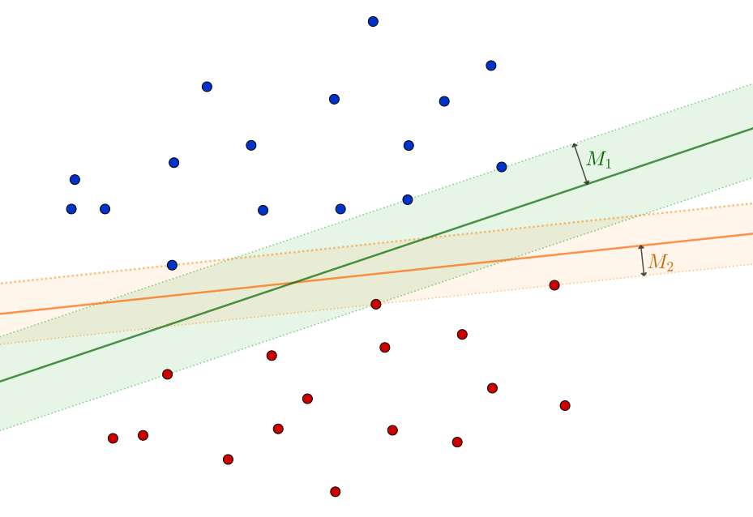
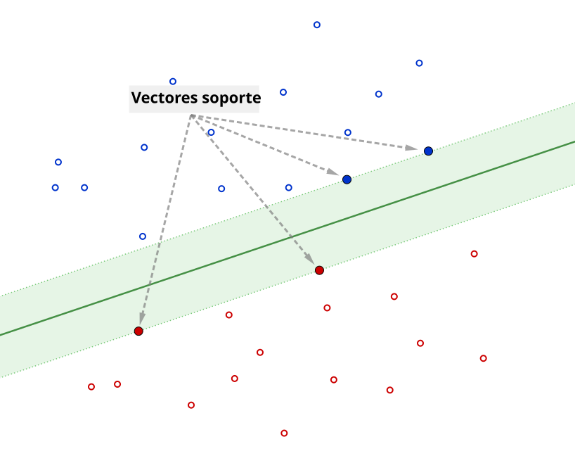
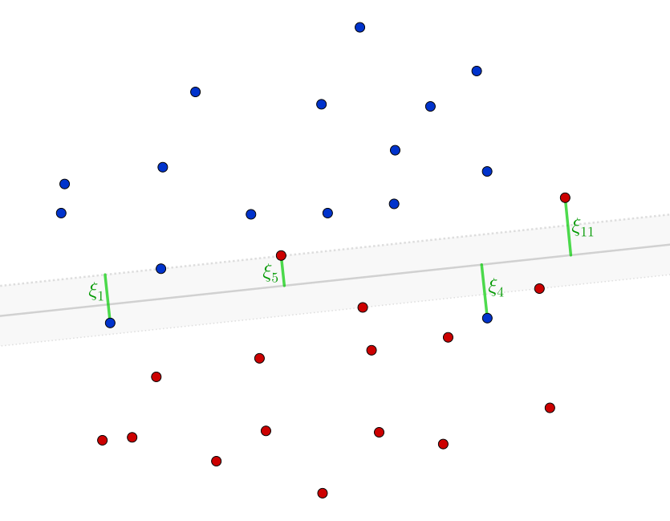
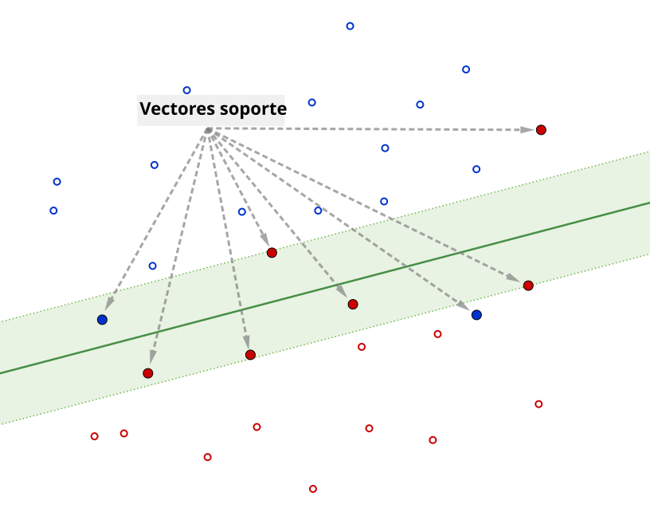
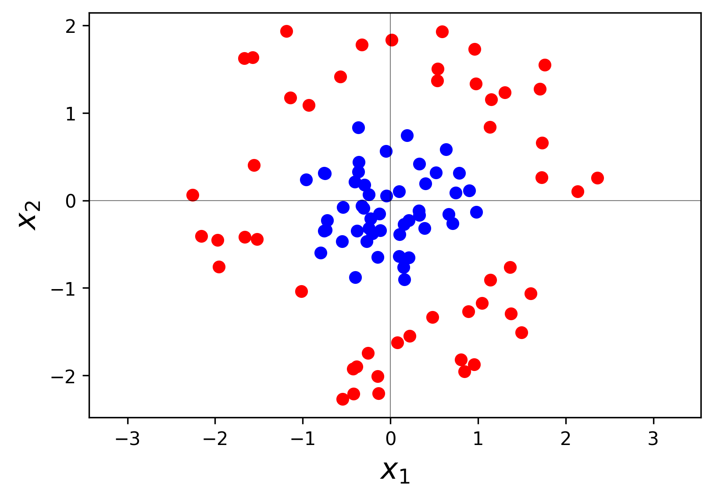
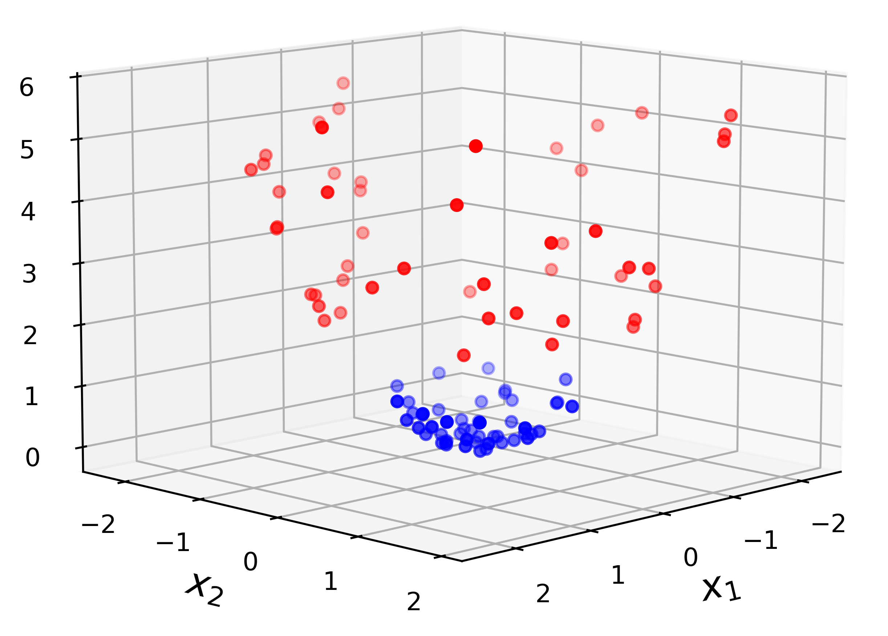

En esta sección vamos a estudiar un algoritmo de aprendizaje supervisado ampliamente utilizado para problemas de clasificación, que ha demostrado ser especialmente efectivo en tareas donde se requiere obtener fronteras de decisión robustas y con buena capacidad de generalización. Su construcción sigue una secuencia natural de conceptos: en primer lugar, se aborda la formulación básica basada en hiperplanos separadores óptimos, cuyo objetivo es maximizar el margen de separación entre clases perfectamente separables; luego, se incorpora el uso de variables de holgura para tratar datos no separables; y, finalmente, se presenta la generalización mediante núcleos reproductores, lo que permite obtener fronteras de decisión no lineales.
Una característica distintiva de estos métodos es que su desarrollo se apoya fuertemente en la formulación dual de problemas de optimización y en las condiciones de Karush-Kuhn-Tucker (KKT), lo que proporciona una interpretación clara en términos de vectores soporte y explica su gran potencial.
En lo que sigue, vamos a asumir que estamos trabajando con un conjunto de datos de entrenamiento \(\{(\xx_i,y_i)\}_{i=1}^n\) de un problema de clasificación binaria cuya variable respuesta, por cuestiones de simplicidad, se considera \(Y\in\{-1,+1\}\).
Hiperplano separador óptimo
El caso más simple de análisis surge de suponer que las clases \(\{\xx_i \mid y_i=-1\}\) y \(\{\xx_i \mid y_i=+1\}\) pueden ser separados totalmente por una frontera lineal.
Definición 1. (Separabilidad lineal) Un conjunto de datos \(\{(\xx_i,y_i)\}_{i=1}^n\), con \(y_i\in\{-1,+1\}\), se dice que es linealmente separable si existen \(\bfbeta\in\RR^p\) y \(\beta_0\in\RR\) tales que \[
y_i=\text{sign}(\bfbeta^\top\xx_i+\beta_0)\qquad \forall i=1,\ldots,n.
\tag{1}
\]
El hiperplano \(\bfbeta^\top\xx+\beta_0=0\) se denomina hiperplano separador y la función \(f:\RR^p\to\RR\) definida por \(f(\xx)=\bfbeta^\top\xx+\beta_0\) se conoce como función score.
📝 Pruebe que \(\bfbeta\) es el vector normal al hiperplano \(\bfbeta^\top\xx+\beta_0=0\) y que la distancia entre un punto \(\xx_0\in\RR^p\) y dicho hiperplano es igual a \(|f(\xx_0)|/\|\bfbeta\|_2\).

Figura 1. Datos linealmente separables y algunos hiperplanos separadores.
Observar que la expresión (1) es equivalente a requerir \[
y_i(\bfbeta^\top\xx_i+\beta_0)>0\qquad\forall i=1,\ldots, n.
\tag{2}
\]
Algo intuitivo (ver Figura 1) es que si las clases son totalmente separables, existen infinitos hiperplanos separadores. Por lo tanto, resulta necesario definir un criterio que permita seleccionar un hiperplano único y óptimo.
Primer principio
Cada vector \(\bfbeta\in\RR^p\) puede definir un único hiperplano separador.
Dado \(\bfbeta\in\RR^p\), asociamos a él el hiperplano separador con vector normal \(\bfbeta\) que equidista a ambas clases. Para poder caracterizar esto matemáticamente, necesitamos antes imponer una restricción de normalización, debido a que la distancia de un punto al hiperplano depende de \(\|\bfbeta\|_2\).
Segundo principio
Se restringe la elección de \(\bfbeta\) a aquellos vectores que cumplen \(\|\bfbeta\|_2=1\).
Bajo estas condiciones, la distancia entre cualquier punto \(\xx_i\) y el hiperplano \(\bfbeta^\top\xx+\beta_0=0\) está dada por \[
|f(\xx_i)|=y_i(\bfbeta^\top\xx_i+\beta_0).
\]
Así:
Un hiperplano separador \(\bfbeta^\top\xx+\beta_0=0\) equidista a ambas clases si existe una distancia mínima\(M\in\RR^+\) tal que \[
y_i(\bfbeta^\top\xx_i+\beta_0)\geq M\qquad\forall i=1,\ldots,n,
\] con igualdad para al menos un punto de cada clase.
A la distancia mínima \(M\) nos referiremos como margen del hiperplano separador. Es importante observar que los puntos para los cuales se cumple la igualdad en la restricción son los que caracterizan al hiperplano; estos se denominan vectores soporte (su definición formal se presentará más adelante).

Figura 2. Hiperplanos separadores y sus margenes asociados.
Ya estamos en condiciones de determinar qué consideraremos como hiperplano separador óptimo.
Definición 2. (Hiperplano separador óptimo) Sea \(\{(\xx_i,y_i)\}_{i=1}^n\), con \(y_i\in\{-1,+1\}\), un conjunto de datos linealmente separable. El hiperplano separador óptimo es aquel que maximiza el margen\(M\).
En base a lo descrito, la búsqueda del hiperplano separador óptimo queda determinada por el siguiente problema de optimización:
Por supuesto, las variables de optimización son \(\bfbeta\in\RR^p\) y \(\beta_0\in\RR\). Si bien esta formulación refleja directamente la intención de maximizar el margen, vamos a ajustarla para obtener una formulación clásica más conveniente.
Formulación clásica
Hemos visto que la restricción \(\|\bfbeta\|_2=1\) permite interpretar al margen \(M\) como la distancia mínima de los puntos al hiperplano. Si se relaja dicha condición, dicha interpretación sigue siendo cierta si se escribe \[
\frac{y_i(\bfbeta^\top\xx_i+\beta_0)}{\|\bfbeta\|_2}\geq M,\qquad i=1,\ldots,n.
\]
En consecuencia, el problema (3) se puede reescribir como \[
\begin{array}{ll}
\text{maximizar } & M\\
\text{sujeto a } & y_i(\bfbeta^\top\xx_i+\beta_0)\geq \|\bfbeta\|_2M,\qquad i=1,\ldots,n,
\end{array}
\tag{4}
\] con una pequeña diferencia: dado un punto óptimo \(\bfbeta^\star\), ahora habrán infinitos puntos óptimos \(k\bfbeta^\star\) (\(k\in\RR\)). De todos ellos, nos interesa particularmente aquel que verifica \[
\|\bfbeta^\star\|_2=\frac{1}{M^\star},
\] donde \(M^\star\) es el margen óptimo. Esta idea nos va a permitir reformular el problema de optimización a partir de una reformulación del segundo principio.
Segundo principio (reformulación)
Se elige \(\bfbeta\) de manera tal que su norma esté relacionada con el margen \(M\) mediante la igualdad \[
\|\bfbeta\|_2=1/M.
\]
Claramente, bajo estas condiciones, maximizar \(M\) es equivalente a minimizar \(\|\bfbeta\|_2\) y, convenientemente, también equivalente a minimizar \(\frac{1}{2}\|\bfbeta\|_2^2\). De esta manera, retomando (4), podemos redefinir el problema de optimización de interés (3) como sigue.
Definición 3. (Problema de optimización del hiperplano separador óptimo) Dado un conjunto de datos \(\{(\xx_i,y_i)\}_{i=1}^n\) linealmente separables, el hiperplano separador óptimo es \[
(\bfbeta^\star)^\top\xx+\beta_0^\star=0,
\] con \(\bfbeta^\star\in\RR^p\) y \(\beta_0^\star\in\RR\) puntos óptimos del problema \[
\begin{array}{ll}
\text{minimizar } & \frac{1}{2}\|\bfbeta\|_2^2\\
\text{sujeto a } & y_i(\bfbeta^\top\xx_i+\beta_0)\geq 1,\qquad i=1,\ldots,n.
\end{array}
\tag{5}
\]
El problema (5) es un problema de optimización convexa cuyo conjunto factible es un poliedro.
El Corolario 1 del C1-S4 nos asegura que las condiciones de Karush-Kuhn-Tucker (KKT) son suficientes y necesarias para la optimalidad. Más aún, el Teorema 6 de esa misma sección (Teorema de Slater) permite afirmar que hay dualidad fuerte.
⚠️ Si bien las condiciones KKT permiten caracterizar completamente la solución óptima, no proporcionan un método directo y eficiente para calcular \(\bflambda^\star\). Por ello, resulta conveniente formular el problema dual de Lagrange, cuya resolución es computacionalmente más sencilla, esto último debido a que resulta ser un problema de optimización cuadrática.
El Lagrangiano asociado al problema (5) es \(\calL:\RR^{p+1}\times\RR^n\to\RR\) definido por \[
\calL(\bfbeta,\beta_0,\bflambda)=\frac{1}{2}\|\bfbeta\|_2^2-\sum_{i=1}^n\lambda_i\left[y_i(\bfbeta^\top\xx_i+\beta_0)-1\right].
\]
Dado que el Lagrangiano es una función convexa en \((\bfbeta,\beta_0)\), la ecuación \(\nabla_{(\bfbeta,\beta_0)}\calL=\bfzero\) caracteriza el ínfimo de \(\calL\) para cada \(\bflambda\). Así, podemos obtener \[
\calG(\bflambda):=\inf_{\bfbeta,\beta_0}\calL(\bfbeta,\beta_0,\bflambda)
\] a partir de las expresiones \[
\bfbeta=\sum_{i=1}^n\lambda_i y_i \xx_i,\qquad \sum_{i=1}^n\lambda_i y_i=0.
\]
Observar que estas define explícitamente a \(\bfbeta\) en términos de \(\bflambda\) y, aunque \(\beta_0\) no queda determinado de forma directa, sí nos provee una restricción de consistencia sobre los multiplicadores. Reemplazando, obtenemos \[
\begin{align}
\calG(\bflambda)&=\frac{1}{2}\left\|\sum_{i=1}^n\lambda_iy_i\xx_i\right\|_2^2-\sum_{i=1}^n\lambda_iy_i\left(\sum_{j=1}^n\lambda_jy_j\xx_j\right)^\top\xx_i-\beta_0\underbrace{\sum_{i=1}^n\lambda_iy_i}_{=0}+\sum_{i=1}^n\lambda_i\\
&=\frac{1}{2}\sum_{i=1}^n\sum_{j=1}^n\lambda_i\lambda_j y_iy_j \xx_i^\top\xx_i-\sum_{i=1}^n\sum_{j=1}^n\lambda_i\lambda_j y_i y_j\xx_j^\top\xx_i+\sum_{i=1}^n\lambda_i\\
&=\sum_{i=1}^n\lambda_i-\frac{1}{2}\sum_{i=1}^n\sum_{j=1}^n\lambda_i\lambda_j y_iy_j\xx_j^\top\xx_i.
\end{align}
\]
Importante
Observar, en la primera igualdad, el término \[
-\beta_0\sum_{i=1}^n\lambda_i y_i.
\]
Esto implica que \(\calG(\bflambda)=-\infty\) si \(\sum_{i=1}^n\lambda_i y_i\neq 0\). Por lo tanto, para el problema dual solo tienen sentido los \(\bflambda\) que cumplen justamente la restricción \[
\sum_{i=1}^n\lambda_i y_i=0.
\]
Al incluir esta condición como restricción en el problema dual, se descartan automáticamente del conjunto factible los \(\bflambda\) que no la cumplen, eliminando así el término en cuestión tal como lo hicimos.
Finalmente, el problema dual es \[
\begin{array}{ll}
\text{maximizar } & \displaystyle\sum_{i=1}^n\lambda_i-\frac{1}{2}\sum_{i=1}^n\sum_{j=1}^n\lambda_i\lambda_j y_iy_j\xx_j^\top\xx_i\\
\text{sujeto a } & \displaystyle\sum_{i=1}^n\lambda_i y_i=0,\;\bflambda\succeq\bfzero.
\end{array}
\tag{6}
\]
Hiperplano separador óptimo
Para obtener el hiperplano separador óptimo de un conjunto de datos linealmente separable:
Se resuelve el problema dual (6) para obtener \(\bflambda^\star\).
Se obtiene el punto óptimo \(\bfbeta^\star\) mediante la condición de estacionariedad \[
\bfbeta^\star=\sum_{\substack{i=1\\\lambda_i^\star\neq 0}}^n\lambda_i^\star y_i\xx_i.
\]
Se calcula el intercepto \(\beta_0^\star\) mediante el promedio \[
\beta_0^\star=\sum_{\substack{i=1\\\lambda_i^\star\neq 0}}^n\left(y_i-(\bfbeta^\star)^\top\xx_i\right),
\] cuyos términos se obtienen al despejar \(\beta_0^\star\) de la condición de holgura complementaria para los puntos que verifican \(\lambda_i^\star\neq 0\).
Luego, una vez obtenidos los puntos óptimos \(\bfbeta^\star\) y \(\beta_0^\star\), resultan:
Si \(\lambda_i^\star>0\), entonces \[
y_i((\bfbeta^\star)^\top\xx_i+\beta_0^\star)=1,
\] lo cual significa que \(\xx_i\) está sobre el borde del margen.
Definición 4. (Vector soporte) Un dato \(\xx_i\) se denomina vector soporte si el multiplicador asociado \(\lambda_i\) es estrictamente positivo.
Si \(\xx_i\) no es un vector soporte, entonces \(\lambda_i^\star=0\).

Figura 3. Vectores soporte de un hiperplano separador óptimo.
Ejemplo 1 Datos linealmente separables
Vamos a simular un conjunto de datos linealmente separables. Luego, obtendremos el hiperplano separador óptimo e identificaremos los vectores soporte.
Hiperplano óptimo: 1.125*x1 + 1.131*x2 + -1.987 = 0
Número de vectores soporte: 3
Variables de holgura y margen suave
En la formulación del hiperplano separador óptimo, se asume que el conjunto de datos \(\{(\xx_i,y_i)\}_{i=1}^n\) es linealmente separable. Sin embargo, en la práctica lo habitual es que exista solapamiento entre las clases. Para extender el análisis del apartado anterior, la estrategia consiste en introducir variables de holgura, simbolizadas con \(\boldsymbol{\xi}\in\RR^n\), que permitan que algunos puntos violen el margen o incluso queden mal clasificados. Este enfoque, conocido como margen suave (soft-margin, en inglés), es lo que desarrollaremos a continuación.

Figura 4. Variables de holgura.
La incorporación de las variables de holgura \(\bfxi\) al problema de optimización (5) conduce al siguiente problema de optimización: \[
\begin{array}{ll}
\text{minimizar } & \frac{1}{2}\|\bfbeta\|_2^2\\
\text{sujeto a } & y_i(\bfbeta^\top\xx_i+\beta_0)\geq 1-\xi_i,\qquad i=1,\ldots,n,\\
& \bfxi\succeq\bfzero,\;\sum_{i=1}^n\xi_i\leq\text{cte}.
\end{array}
\tag{7}
\]
Este nuevo problema de optimización tiene variables \(\bfbeta\in\RR^p\), \(\beta_0\in\RR\) y \(\bfxi\in\RR^{n}\). La restricción \(\sum_{i=1}^n=\xi_i\leq\text{cte}\) permite controlar el grado de tolerancia a puntos que están dentro o del lado incorrecto del margen. Este control es más natural pensarlo como una penalización en la función objetivo, derivando en la siguiente forma alternativa de (7):
A \(C>0\) se lo conoce como hiperparámetro de costo. Cuanto mayor es su valor, mayor es la penalización que el modelo impone sobre las violaciones del margen, lo que conduce a un clasificador más estricto que busca minimizar los errores de clasificación a costa de un margen posiblemente más estrecho.
El problema (8) es un problema de optimización convexa cuyo conjunto factible es un poliedro.
Estamos en condiciones de aplicar nuevamente las condiciones de Karush-Kuhn-Tucker (KKT) y la dualidad para caracterizar la solución de este problema. De ahora en adelante, nos referiremos al método construido hasta aquí como Máquina de Vectores Soporte (SVM) lineal.
Aplicación de condiciones KKT y dualidad
En (8) se distinguen \(2n\) restricciones de desigualdad. Para aquellas asociadas a las variables de holgura, \(\bfxi\succeq 0\), distinguiremos sus multiplicadores con la notación \(\bfmu=(\mu_1,\ldots,\mu_n)\). Las condiciones KKT son \[
\begin{array}{cl}
y_i((\bfbeta^\star)^\top\xx_i+\beta_0^\star)-(1-\xi_i^\star)\geq 0\qquad\forall i=1,\ldots,n\qquad&\text{(Factibilidad primal)}\\[3pt]
\lambda_i^\star\geq 0,\;\mu_i^\star\geq 0\qquad\forall i=1,\ldots,n\qquad &\text{(Factibilidad dual)}\\[3pt]
\lambda_i^\star\left[y_i((\bfbeta^\star)^\top\xx_i+\beta_0^\star)-(1-\xi_i^\star)\right]=0,\quad\mu_i^\star\xi_i^\star=0\qquad\forall i=1,\ldots,n\qquad&\text{(Holgura complementaria)}\\[3pt]
\bfbeta^\star=\sum_{i=1}^n\lambda_i^\star y_i\xx_i,\quad 0=\sum_{i=1}^n\lambda_i^\star y_i,\quad C=\lambda_i^\star+\mu_i^\star\;(\forall i)\qquad&\text{(Estacionariedad)}
\end{array}
\]
Como antes, es conveniente formular el problema dual de Lagrange. En este caso, el Lagrangiano es \(\calL:\RR^{p+1}\times\RR^n\times\RR^n\to\RR\) definido por \[
\calL(\bfbeta,\beta_0,\bflambda,\bfmu)=\frac{1}{2}\|\bfbeta\|_2^2+C\sum_{i=1}^n\xi_i-\sum_{i=1}^n\lambda_i\left[y_i(\bfbeta^\top\xx_i+\beta_0)-(1-\xi_i)\right]-\sum_{i=1}^n\mu_i\xi_i.
\]
La función dual es \[
\begin{align}
\calG(\bflambda)&=\frac{1}{2}\left\|\sum_{i=1}^n\lambda_iy_i\xx_i\right\|_2^2+C\sum_{i=1}^n\xi_i-\sum_{i=1}^n\lambda_iy_i\left(\sum_{j=1}^n\lambda_jy_j\xx_j\right)^\top\xx_i-\beta_0\underbrace{\sum_{i=1}^n\lambda_iy_i}_{=0}+\sum_{i=1}^n\lambda_i-\sum_{i=1}^n\underbrace{(\lambda_i+\mu_i)}_{=C}\xi_i\\
&=\frac{1}{2}\sum_{i=1}^n\sum_{j=1}^n\lambda_i\lambda_j y_iy_j \xx_i^\top\xx_i-\sum_{i=1}^n\sum_{j=1}^n\lambda_i\lambda_j y_i y_j\xx_j^\top\xx_i+\sum_{i=1}^n\lambda_i\\
&=\sum_{i=1}^n\lambda_i-\frac{1}{2}\sum_{i=1}^n\sum_{j=1}^n\lambda_i\lambda_j y_iy_j\xx_j^\top\xx_i.
\end{align}
\]
Hemos obtenido la misma función dual que para el caso sin variables de holgura. Sin embargo, el problema dual no es el mismo, puesto que hay que considerar la restricción \(\bfmu\succeq \bfzero\). Resulta: \[
\begin{array}{ll}
\text{maximizar } & \displaystyle\sum_{i=1}^n\lambda_i-\frac{1}{2}\sum_{i=1}^n\sum_{j=1}^n\lambda_i\lambda_j y_iy_j\xx_j^\top\xx_i\\
\text{sujeto a } & \displaystyle\sum_{i=1}^n\lambda_i y_i=0,\;\bflambda\succeq\bfzero,\;\bfmu\succeq\bfzero.
\end{array}
\tag{9}
\]
Sin embargo, podemos combinar las restricciones de negatividad, en virtud de la condición de estacionariedad \(C=\lambda_i+\mu_i\), y escribir en (9) simplemente \(0\leq \lambda_i\leq C\) para todo \(i=1,\ldots,n\). Esto deriva en la versión final del problema dual: \[
\begin{array}{ll}
\text{maximizar } & \displaystyle\sum_{i=1}^n\lambda_i-\frac{1}{2}\sum_{i=1}^n\sum_{j=1}^n\lambda_i\lambda_j y_iy_j\xx_j^\top\xx_i\\
\text{sujeto a } & \displaystyle\sum_{i=1}^n\lambda_i y_i=0, \\
& 0\leq \lambda_i\leq C,\quad i=1,\ldots,n.
\end{array}
\tag{10}
\]
SVM lineal
Para obtener el hiperplano óptimo de un conjunto de datos:
Se resuelve el problema dual (10) para obtener \(\bflambda^\star\).
Se obtiene el punto óptimo \(\bfbeta^\star\) mediante la condición de estacionariedad \[
\bfbeta^\star=\sum_{\substack{i=1\\\lambda_i^\star\neq 0}}^n\lambda_i^\star y_i\xx_i.
\]
Se calcula el intercepto \(\beta_0^\star\), promediando sobre los vectores soporte con \(\xi_i=0\) el valor \[
\beta_0^\star=y_i-\bfbeta^\top\xx_i,
\] que resulta de despejar \(\beta_0^\star\) de la condición de holgura complementaria.
Luego, una vez obtenidos los puntos óptimos \(\bfbeta^\star\) y \(\beta_0^\star\), resultan:
Si \(\lambda_i^\star>0\), entonces \[
y_i((\bfbeta^\star)^\top\xx_i+\beta_0^\star)=1-\xi_i^\star.
\]
Esto da dos opciones para los vectores soporte:
Si \(\xi_i^\star=0\), \(\xx_i\) está sobre el borde del margen.
Si, por el contrario, \(\xi_i>0\), entonces \(\xx_i\) viola el margen.
📝 Analice en qué caso un punto soporte queda mal clasificado.
Todo vector soporte se encuentra en una de las siguientes posiciones respecto al margen: en el borde, dentro del margen o fuera del margen pero mal clasificado.

Figura 5. Vectores soporte de un hiperplano óptimo con margen suave.
Por otro lado, si \(y_i((\bfbeta^\star)^\top\xx_i+\beta_0^\star)>1-\xi_i^\star\), la holgura complementaria indica que debe ocurrir \(\lambda_i^\star=0\). ¡Cuidado! En principio, el hecho de tener holgura positiva no garantiza automáticamente que el punto sea vector soporte. Necesitamos hacer un análisis adicional.
¿Qué característica tienen los puntos con holgura positiva?
Si \(\xi_i^\star>0\), la condición de holgura complementaria \(\mu_i^\star\xi_i^\star=0\) junto a la condición de estacionariedad \(C=\lambda_i^\star+\mu_i^\star\), nos permiten deducir que se verifica \[
\lambda_i^\star=C.
\]
Dado que asumimos \(C>0\), concluimos que:
Todo punto con holgura positiva es un vector soporte.
A continuación, resumamos las posibilidades para un punto \(\xx_i\) con multiplicador \(\lambda_i^\star\).
📝
Multiplicador
¿Es vector soporte?
¿Tiene holgura positiva?
Posición respecto al margen
\(\lambda_i^\star=0\)
\(0<\lambda_i^\star<C\)
\(\lambda_i^\star=C\)
Ejemplo 2 Datos con solapamiento
Modificaremos el ejemplo 1, generando datos de manera que las clases no sean linealmente separables, aunque la frontera de decisión lineal siga siendo una opción razonable. Luego, obtendremos el hiperplano óptimo e identificaremos los vectores soporte.
Hiperplano óptimo: 0.681*x1 + 0.569*x2 + -2.275 = 0
Número de vectores soporte: 21
Máquinas de vectores soporte no lineal
El uso de hiperplanos separadores tiene la limitación de que determina una frontera de decisión lineal. En muchos problemas reales, esta hipótesis resulta demasiado restrictiva: los datos pueden estar distribuidos de manera tal que no exista un hiperplano capaz de separarlos correctamente, ni siquiera permitiendo un margen suave. Para graficar esto, veamos el siguiente ejemplo.
Ejemplo 3 Transformación de datos de \(\RR^2\) a \(\RR^3\)
En la siguiente figura se presenta un conjunto de datos de entrenamiento correspondiente a un problema de clasificación binaria con predictoras \(X_1\) y \(X_2\).

Claramente no sería conveniente intentar clasificar mediante una frontera de decisión lineal. Una estrategia más apropiada es transformar los datos a \(\RR^3\), añadiendo la variable \[
Z = X_1^2+X_2^2.
\]

En el espacio transformado \(\RR^3\), los puntos de las dos clases están ahora claramente separados a lo largo de la coordenada \(Z\). Por lo tanto, es apropiado aplicar allí un hiperplano separador, ya que ahora existe una frontera lineal que separa perfectamente las dos clases.
El ejemplo anterior motiva la idea de usar transformaciones no lineales para mejorar las condiciones de un problema. Formalmente, definimos una transformación como \[
\phi:\RR^p\to\calH,
\]
donde \(\calH\) es un espacio de Hilbert; es decir, un espacio donde tenemos un producto interno \(\langle\cdot,\cdot\rangle_{\calH}\) definido, de manera tal que podemos calcular \[
\langle \phi(\xx_1),\phi(\xx_2)\rangle_{\calH}\qquad\forall\xx_1,\xx_2\in\RR^p.
\tag{11}
\]
Observar que en el Ejemplo 3 la transformación se hace entre dos espacios de dimensión finita, ya que allí \(\calH=\RR^3\). No obstante, en general, será necesario transformar a un espacio de dimensión infinita.
Importante
De ahora en adelante, consideraremos \(\calH\) un espacio de funciones de la forma \(h:\RR^p\to\RR\). Es decir, el mapeo será de la forma \[
\xx\mapsto h
\]
Veremos que esto no representa ninguna dificultad adicional; por el contrario, permite utilizar una herramienta muy poderosa que justifica el éxito de las máquinas de vectores soporte.
Núcleos reproductores
El cálculo de productos internos en (11) será fundamental para la generalización de SVM. Para un \(\calH\) arbitrario, esto significa que necesitamos conocer explícitamente su producto interno \(\langle\cdot,\cdot\rangle_{\calH}\), lo cual resulta ser una limitación práctica. Una manera de sortear esto es utilizar un espacio de Hilbert con núcleo reproductor (RKHS).
Definición 3. (RKHS) Un espacio de Hilbert \(\calH\) es un espacio de Hilbert con núcleo reproductor (RKHS) si admite un núcleo reproductor\(k:\RR^p\times\RR^p\to\RR\) que verifica las siguientes propiedades:
Para todo \(\xx\in\RR^p\), \(k(\xx,\cdot)\in\calH\).
Para todo \(\xx\in\RR^p\) y toda \(h\in\calH\), \[
h(\xx)=\langle h,k(\xx,\cdot)\rangle_{\calH}.
\]
Veamos el efecto de trabajar con RKHS para el cálculo de productos internos en (11). Las propiedades de la Definición 3 implican que
Figura 6. Mapeo característico \(\phi:\RR^p\to\calH\) asociado a un RKHS.
Este último resultado es crucial: afirma que, dado un mapeo característico \[
\xx\mapsto k(\xx,\cdot),
\]
lo único que necesitamos para poder calcular productos internos en \(\calH\) es conocer explícitamente el núcleo reproductor \(k\). Ahora bien:
¿Cómo se construye un núcleo \(k\) válido?
Para responder a esta pregunta, es necesario introducir la siguiente definición.
Definición 4. Una función \(k:\RR^p\times\RR^p\to\RR\) se dice definida positiva si para todo \(n\in\NN\), \(\alpha_1,\ldots,\alpha_n\in\RR\) y \(\xx_1,\ldots,\xx_n\in\RR^p\) resulta \[
\sum_{i=1}^n\sum_{j=1}^m\alpha_i\alpha_jk(\xx_i,\xx_j)\geq 0.
\tag{12}
\]
Por otra parte, \(k\) es simétrica si \[
k(\xx_1,\xx_2)=k(\xx_2,\xx_1)\qquad\forall\xx_1,\xx_2\in\RR^p.
\]
Dado \(\xx_1,\ldots,\xx_n\in\RR^p\), la matriz \(K\in\RR^{p\times p}\) definida por \[
K_{ij}=k(\xx_i,\xx_j)
\] se conoce como matriz de Gram. La expresión (12) es equivalente a \(K\succeq 0\).
Importante
Algunos de los núcleos más habituales en aplicaciones de SVM son:
Núcleo lineal: corresponde a SVM lineal; es decir, no hay transformación de los datos. \[
k(\xx_1,\xx_2)=\xx_1^\top\xx_2.
\]
La idea básica es aplicar la metodología de hiperplano separador con margen suave en el espacio de características \(\calH\). Esto significa que la función dual es \[
\calG(\lambda)=\sum_{i=1}^n\lambda_i-\frac{1}{2}\sum_{i=1}^n\sum_{j=1}^n\lambda_i\lambda_j y_i y_j \underbrace{\langle k(\xx_i,\cdot), k(\xx_j,\cdot)\rangle_{\calH}}_{k(\xx_i,\xx_j)}.
\]
El problema dual correspondiente es \[
\begin{array}{ll}
\text{maximizar } & \displaystyle\sum_{i=1}^n\lambda_i-\frac{1}{2}\displaystyle\sum_{i=1}^n\sum_{j=1}^n\lambda_i\lambda_j y_i y_j k(\xx_i,\xx_j)\\
\text{sujeto a } & \displaystyle\sum_{i=1}^n\lambda_i y_i=0,\;\bflambda\succeq 0.
\end{array}
\tag{13}
\]
SVM no lineal
Para obtener el hiperplano óptimo de un conjunto de datos en un RKHS:
Se resuelve el problema dual (13) para obtener \(\bflambda^\star\).
Se obtiene el punto óptimo \(\bfbeta^\star\) mediante la condición de estacionariedad \[
\bfbeta^\star=\sum_{\substack{i=1\\\lambda_i^\star\neq 0}}^n\lambda_i^\star y_ik(\xx_i,\cdot).
\]
Se calcula el intercepto \(\beta_0^\star\), promediando sobre los puntos soporte el valor \[
\beta_0^\star=y_i-\langle \bfbeta^\star, k(\xx_i,\cdot)\rangle_{\calH}=y_j-\sum_{\substack{i=1\\\lambda_i^\star\neq 0}}^n\lambda_i^\star y_i k(\xx_i,\xx_j) ,
\] que resulta de despejar \(\beta_0^\star\) de la condición de holgura complementaria.
Una vez obtenidos los puntos óptimos \(\bfbeta^\star\) y \(\beta_0^\star\), resultan:
Hastie, T., Tibshirani, R., & Friedman, J. (2009). The Elements of Statistical Learning: Data Mining, Inference, and Prediction (2nd ed.). Capítulo 4, Sección 5 y Capítulo 12. Springer.
Steinwart, I., & Christmann, A. (2008). Support Vector Machines. Springer.